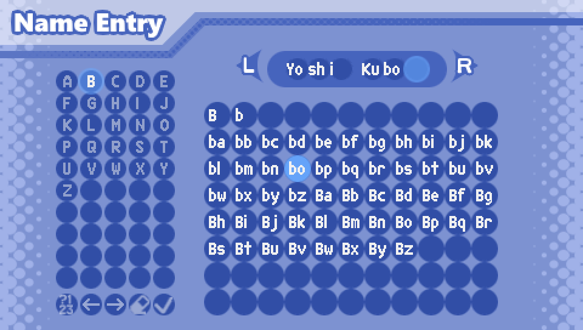
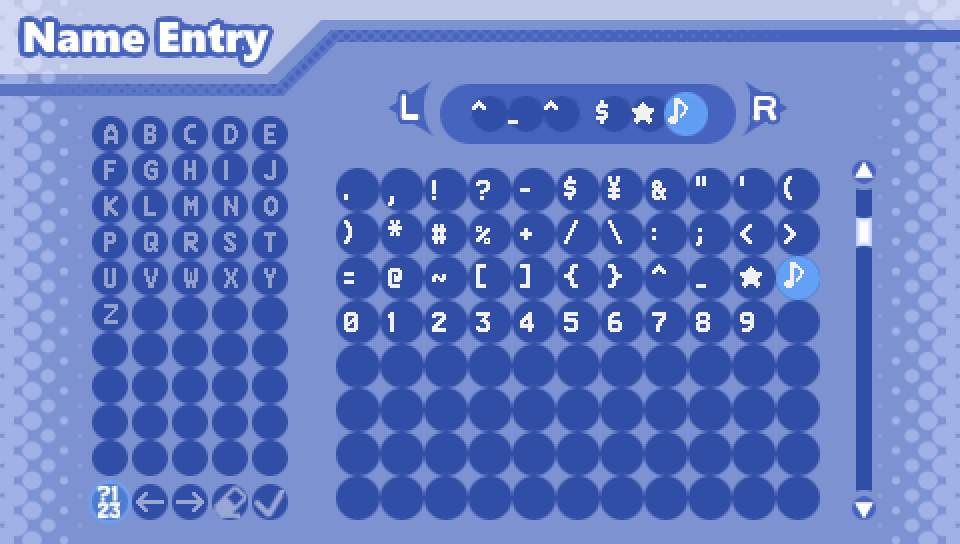
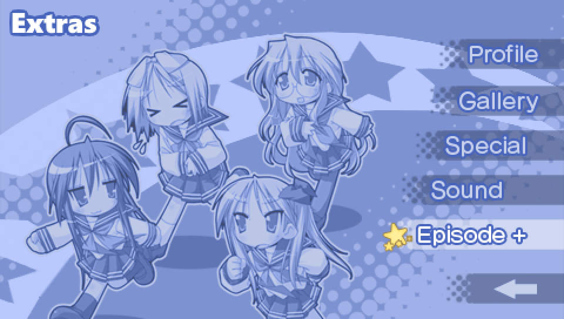
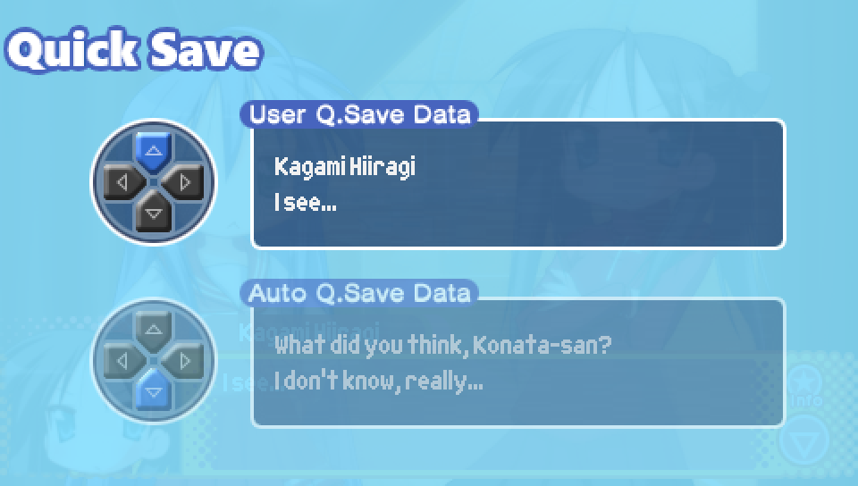
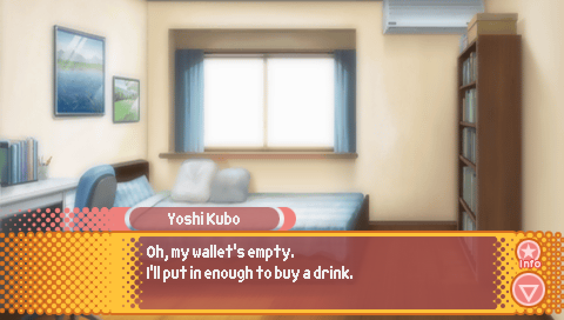
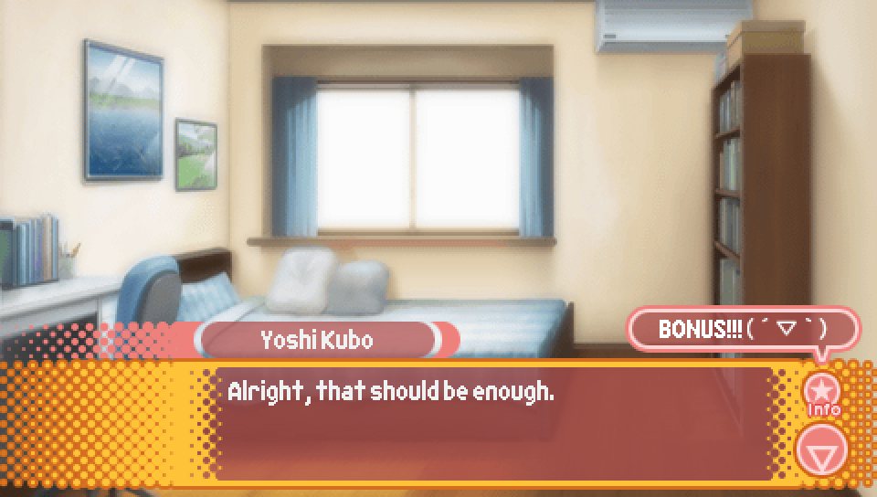
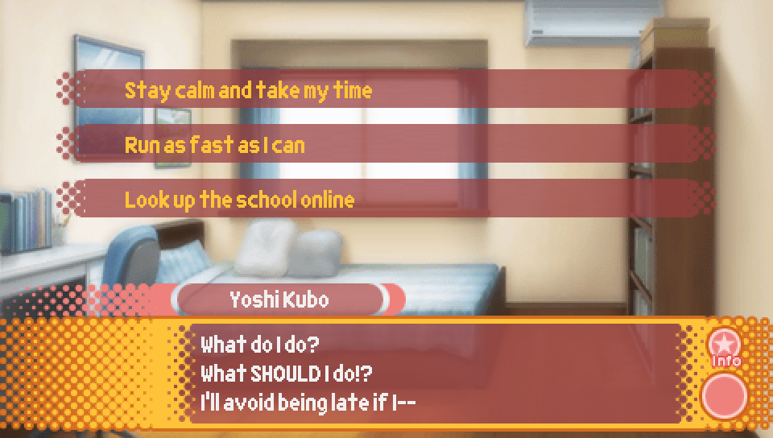
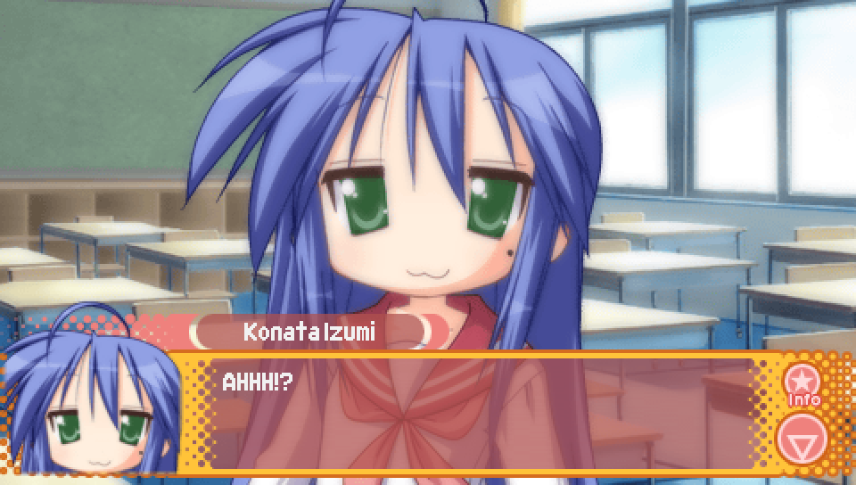
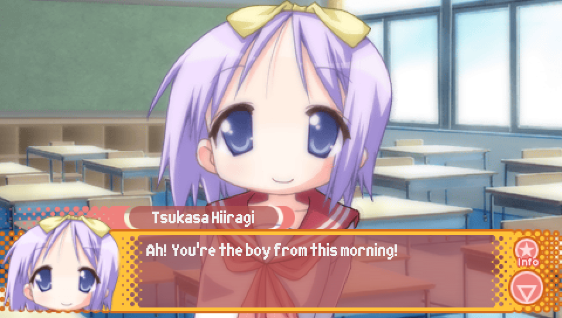
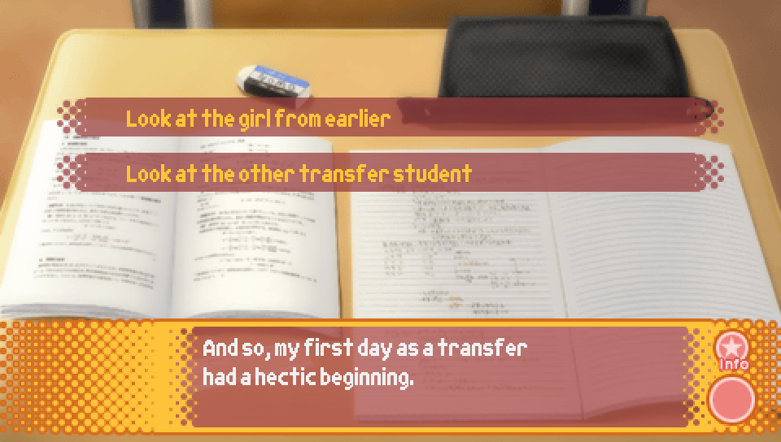

Episode 1: Lucky Lucky Memorial |
|

Upon selecting "New File" on the title screen, you'll be taken to the above screen
where you can enter a name for the protagonist to have. The contents of the first
three circles is the protagonist's first name, while the contents of the last three
circles is the protagonist's last name. Some characters will primarily refer to the
protagonist by his first name while others will primarily refer to him by his last name,
so be mindful of this when choosing a name.
Additionally, the protagonist has no official name. The name "Yoshi Kubo" used in the
translator's notes and guides is my own invention, so while I would be honored if you
were to choose to use that name, I encourage you to use any name you like!
You'll also notice that for each letter, you have the upper and lower case version,
but also every two letter combination that starts with that letter. This is to allow you
to enter names that are up to six letters in length for both the first and last name.
Notice how "Yoshi Kubo" was actually entered in as "Yo sh i Ku bo".

If you select the "?123" circle on the bottom left, you can enter symbols
for the name. However, do note that there are no dual character glyphs for
symbols, so each symbol will take up an entire slot for your name.
|

There are several names the game treats as special, and will result in
a special voice clip that plays upon selecting the checkmark symbol to confirm
the name. These are a leftover from the PS2 version of the game, where this was how
you accessed the game's unlockable mini scenarios. However, in this version, all that
happens is you get some special voice clips.
What follows is a list of all the special names, written out in the way you have to enter
them in-game in order to get the voice clip, as well as a translation of what they say in
the voice clip. Note that these are case-sensitive and you need to properly split it up
between first and last name, as well as properly utilizing the dual character glyphs.
For instance, "Ko u" takes only two slots, so the first slot must be "Ko", the second "u",
and the third slot must be blank
-
Name: Ko na ta Iz um i (Konata Izumi)
Voice clip: Are you capturing me with me?
-
Name: Ka ga mi Hi ir ag (Kagami Hiiragi)
Voice clip: Hey... pick a different name!
-
Name: Ka ga mi Hi ir ag (Kagami Hiiragi)
Voice clip: Hey... pick a different name!
-
Name: Ts uk as Hi ir ag (Tsukasa Hiiragi)
Voice clip: Wow, you have the same name as me?
-
Name: Mi yu ki Ta ka ra (Miyuki Takara)
Voice clip: What a coincidence! That's my name too!
-
Name: Mi sa o Ku sa ka (Misao Kusakabe)
Voice clip: What an odd name... Wait, that's my name!
-
Name: Ay an o Mi ne gi (Ayano Minegishi)
Voice clip: Gee... that's my name, you know?
-
Name: Ko u Ya sa ka (Kou Yasaka)
Voice clip: Hey, that's rare! We have the same name!
-
Name: Yu ta ka Ko ba ya (Yutaka Kobayakawa)
Voice clip: Woah, that's the same name as me!
-
Name: Mi na mi Iw as ak (Minami Iwasaki)
Voice clip: That's the... same name as mine...
-
Name: Hi yo ri Ta mu ra (Hiyori Tamura)
Voice clip: Same names... that gives me an idea!
-
Name: Pa tt y Ma rt in (Patricia Martin)
Voice clip: My full name is Patricia Martin!
-
Name: Ya ma to Na ga mo (Yamato Nagamori)
Voice clip: That's the... same name as mine...
-
Name: Na na ko Ku ro i (Nanako Kuroi)
Voice clip: Same first and last name, what a coincidence!
-
Name: Hi ka ru Sa ku ra (Hikaru Sakuraba)
Voice clip: Do you REALLY have the same name as me?
-
Name: Fu yu ki Am ah ar (Fuyuki Amahara)
Voice clip: This is my first time meeting someone with the same name as me.
-
Name: Yu i Na ru mi (Yui Narumi)
Voice clip: My maiden name is Kobayakawa, but now I'm a lovely wife!
-
Name: Hi ka ge Mi ya ka (Hikage Miyakawa)
Voice clip: Isn't that my name?
-
Name: Hi na ta Mi ya ka (Hikage Miyakawa)
Voice clip: My, the same name, that's an incredible coincidence!
-
Name: Pa pa Iz um i (Soujirou Izumi)
Voice clip: Same name, huh? That means you and I are buddies!
-
Name: Ka na ta Iz um i (Kanata Izumi)
Voice clip: So you remembered my name!
-
Name: Yu ka ri Ta ka ra (Yukari Takara)
Voice clip: My my... same first and last name? How troubling.
-
Name: Ay a Hi ra no (Aya Hirano -- Konata Izumi's voice actress)
Voice clip: What!? Incredible!
-
Name: Em ir i Ka to u (Emiri Katou -- Kagami Hiiragi's voice actress)
Voice clip: How bold of you!
-
Name: Ka or i Fu ku ha (Kaori Fukuhara -- Tsukasa Hiiragi's voice actress)
Voice clip: Hello, this is the person inside of Tsukasa Hiiragi. You and I have the same name!
-
Name: Ay a En do u (Aya Endou -- Miyuki Takara's voice actress)
Voice clip: Oh, we're the same!
-
Name: Ka or u Mi zu ha (Kaoru Mizuhara -- Misao Kusakabe's voice actress)
Voice clip: You wanna be the same as me?
-
Name: Ma i Ai za wa (Mai Aizawa -- Ayano Minegishi's voice actress)
Voice clip: So you're a fanatic? I'm counting on you!
-
Name: Ri ka Mo ri na (Rika Morinaga -- Kou Yasaka's voice actress)
Voice clip: You've set yourself up for a bad ending!
-
Name: Sh iz uk Ha se ga (Shizuka Hasegawa -- Yutaka Kobayakawa's voice actress)
Voice clip: Hooray! You're amazing!
-
Name: Mi no ri Ch ih ar (Minori Chihara -- Minami Iwasaki's voice actress)
Voice clip: Oh, that's the same as mine!
-
Name: Ka or i Sh im iz (Kaori Shimizu -- Hiyori Tamura's voice actress)
Voice clip: Kaori Shimizu... that's a good name.
-
Name: No zo mi Sa sa ki (Nozomi Sasaki -- Patricia Martin's voice actress)
Voice clip: Thank you!
-
Name: Sh io n Hi ro ta (Shion Hirota -- Yamato Nagamori's voice actress)
Voice clip: Pleased to meet you.
-
Name: Ko no mi Ma ed a (Konomi Maeda -- Nanako Kuroi's voice actress)
Voice clip: I love you too.
-
Name: Mi ki In ou e (Miki Inoue -- Hikaru Sakuraba's voice actress)
Voice clip: We have the same name.
-
Name: Mi ki In ou e (Miki Inoue -- Hikaru Sakuraba's voice actress)
Voice clip: We have the same name.
-
Name: Ku mi Sa ku ma (Kumi Sakuma -- Fuyuki Amahara's voice actress)
Voice clip: Oh, so that's how it is?
-
Name: Sa or i Ni sh ih (Saori Nishihara -- Yui Narumi's voice actress)
Voice clip: Saori Nishihara, we have the same name!
-
Name: Yu i Ka no (Yui Kano -- Hikage Miyakawa's voice actress)
Voice clip: Oh, that's my name. Thank you!
-
Name: Yu ki ko Ta ka gu (Yukiko Takaguchi -- Hinata Miyakawa's voice actress)
Voice clip: Yaaay, we're the same! Thank you!
-
Name: Hi ro ka Hi ra ma (Hirokazu Hiramatsu -- Soujirou Izumi's voice actor)
Voice clip: Good job!
-
Name: Su mi Sh im am (Sumi Shimamoto -- Kanata Izumi's voice actress)
Voice clip: Oh, me?
-
Name: Ma mi Ko su ge (Mami Kosuge -- Yukari Takara's voice actress)
Voice clip: Oh no, madam, is that the name you want?
-
Name: Hi ro mi Ko nn o (Hiromi Konno -- Akira Kogami's voice actress)
Voice clip: Same first and last name, banzai!
-
Name: Mi no ru Sh ir ai (Minoru Shiraishi (voice actor))
Voice clip: Ma'am, you're good! Good Minoru! Nice Minoru!
-
Name: Wa su re mo no (Minoru Shiraishi (character))
Voice clip: Real name and character name, both are Minoru Shiraishi!
-
Name: 3 0 ye ar s (Akira Kogami)
Voice clip: Who dares enter that name!?
-
Name: Lu ck y St ar
Voice clip: *silence* (Yes, really. It specifically overrides the usual sound effect to play nothing.)
|
|

Mini scenarios are unlockable bonus scenes that take place outside of the main story.
They can be accessed by choosing "Extras" on the title screen, then "Episode +".
This Episode has two that you can unlock. These are:
- Tsukasa Mini Scenario -- Unlocked by getting the good ending to Tsukasa's Lucky Lucky Memorial route.
- Miyuki Mini Scenario -- Unlocked by getting the good ending to Miyuki's Lucky Lucky Memorial route.
Though you might expect there to be a Konata Mini Scenario that's unlocked by getting
the good ending to Konata's Lucky Lucky Memorial route, the Konata Mini Scenario is actually
unlocked much later on into the game so it won't appear yet.
How to get the good endings to each route will be explained further down.
|
A Quick Note on Quick Saving |

A relatively unknown feature of this game is the quick save system.
To access this menu, press SELECT + R while reading through the story.
Here you'll see that the game automatically makes a quick save for the most
recent choice you have encountered, making it easy to check out what happens
when you pick each of the different choices. You can also make your own quick save by pressing UP.

Quick saves can be loaded via the quick load menu.
To access it, press SELECT + L while reading through the story.
The quick saves can then be loaded by pressing UP or DOWN.
Note that the quick save system is disabled while playing mini scenarios.
|
What do you mean, "BONUS!!!"? |


If you choose to replay the Lucky Lucky Memorial routes
on a save file that's already gone through Lucky Lucky Memorial once,
the protagonist will put some money in his wallet before going to school
on the morning after he agrees to play Shirou.
You'll then see this "BONUS!!!" pop-up and will hear a "ding" sound effect.
This "BONUS!!!" pop-up is specifically used to indicate when you have obtained
money. In this case, replaying the Konata, Miyuki, or Tsukasa Lucky Lucky Memorial routes
awards you 120 yen.
What is this money used for? In Episode 1, nothing! However, in future episodes there is
something you are able to spend your money on, which I'll talk more about when it becomes
relevant.
|
|
Lucky Star: Ryouou Gakuen Outousai is a visual novel.
Therefore, the gameplay entirely consists of picking one of a few choices
at many places throughout the story. The route guides seen below will show
all of the places where the choice you make has a greater impact than merely
the dialogue that immediately follows it and will explain the impact each choice has.
This guide will also point out any point in the story where what happens is influenced
by the sum total of the choices you've made previously and how to see all possible outcomes.
If a choice isn't mentioned in this guide, it's because it has no impact on what happens.
Nearly everything in this game is determined based on various internal values that go up
when a certain choice is picked. In this Episode, the only values you have to worry about
are the "favorability" values the protagonist has with the main four Lucky Star girls:
Konata, Kagami, Tsukasa, and Miyuki. These values will play a special sound effect
whenever one increases. At the start of the Episode, each of these values is set to 0.
|
|

- Stay calm and take my time -- Konata favorability + 4
- Run as fast as I can -- Miyuki favorability + 4
- Look up the school online -- Kagami favorability + 4, Tsukasa favorability + 4
This choice also influences which characters the protagonist meets first and therefore who
will be the one who will recognize the protagonist after his self-introduction.
For "Stay calm and take my time", it's Konata.

For "Run as fast as I can", it's Miyuki.

And for "Look up the school online", it's Tsukasa.

|
|

As the "girl from earlier" can differ, the scene that plays out for this choice
also differs somewhat based on whether that girl is Konata, Miyuki, or Tsukasa.
|
|